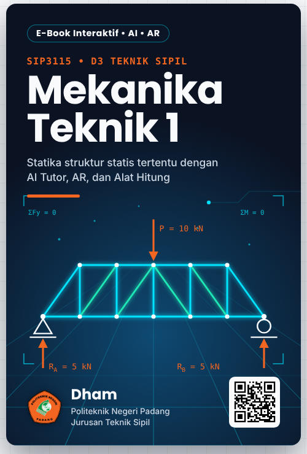

A1. Kover Depan

Kover terpilih: Varian 1 – Hologram Kesetimbangan, logo resmi PNP, kode QR ke SPADA PNP (berkas kover.html).
A2. Halaman Judul
A3. Identitas dan Hak Cipta
| Butir | Isi |
|---|---|
| Judul | Mekanika Teknik 1: Statika Struktur Statis Tertentu – E-Book Interaktif AI • AR • Alat Hitung |
| Penulis | Dham [gelar lengkap mohon dilengkapi] |
| Pemegang hak cipta | © 2026 Dham |
| Penerbit | [mohon dilengkapi – mis. diterbitkan mandiri oleh penulis atau melalui unit penerbitan PNP] |
| ISBN | [menunggu nomor] |
| Edisi | Edisi pertama, 2026 • Versi e-book 1.0 |
| Penyunting / desain | [mohon dilengkapi] |
| Alamat daring | SPADA PNP – https://spadasp.pnp.ac.id |
| Ketentuan penggunaan | Dilarang memperbanyak atau menyebarluaskan sebagian atau seluruh isi buku tanpa izin tertulis pemegang hak cipta, kecuali untuk kutipan pembelajaran dengan menyebut sumber. Perlindungan mengacu pada Undang-Undang Republik Indonesia Nomor 28 Tahun 2014 tentang Hak Cipta. |
| Catatan | Angka beban, kapasitas, dan data kasus dalam buku ini disederhanakan untuk pembelajaran. Perencanaan nyata wajib mengacu pada standar yang berlaku dan diperiksa oleh tenaga ahli. |
A4. Kata Pengantar (draf untuk disesuaikan penulis)
Puji syukur ke hadirat Tuhan Yang Maha Esa atas selesainya e-book Mekanika Teknik 1 ini. Buku ini disusun untuk mendampingi mahasiswa D3 Teknik Sipil Politeknik Negeri Padang pada semester pertama, saat mereka mulai belajar “membaca” aliran gaya pada bangunan.
Buku ini mengikuti Kurikulum PSD3TS berbasis Outcome-Based Education (revisi 2026) dan RPS Mekanika Teknik I. Setiap bab diawali dari benda dan bangunan di sekitar kita – kanopi sekolah, tandon di ruko, gudang hasil panen – lalu dibawa ke hitungan dan keputusan teknis. Prinsip pembelajaran mendalam diterapkan melalui pengalaman memahami, mengaplikasi, dan merefleksi dengan suasana yang berkesadaran, bermakna, dan menggembirakan.
Sebagai e-book interaktif, buku ini dilengkapi AI Tutor yang membimbing dengan pertanyaan, objek augmented reality (AR) yang dapat diamati dari berbagai sisi, dan alat hitung yang menampilkan langkah penyelesaian. Fitur-fitur itu bukan pengganti berpikir, melainkan teman berlatih. Kebiasaan menggambar diagram benda bebas, menulis satuan, dan memeriksa kesetimbangan tetap menjadi kunci.
Terima kasih kepada pimpinan Jurusan Teknik Sipil dan Program Studi D3 Teknik Sipil PNP, tim penyusun kurikulum, rekan dosen, serta mahasiswa yang memberi masukan. Kritik dan saran untuk perbaikan edisi berikutnya sangat diharapkan.
Padang, [tanggal] 2026 • Penulis, Dham
A5. Petunjuk Penggunaan E-Book
| Ikon | Nama | Cara memakai |
|---|---|---|
| i-capaian | Capaian Pembelajaran | Baca di awal bab; tandai indikator yang sudah tercapai di akhir bab. |
| i-peta-konsep | Peta Konsep | Ketuk kotak untuk melompat ke subbab. |
| i-apersepsi | Apersepsi | Jawab pertanyaan pemantik di kolom catatan sebelum membaca materi. |
| i-contoh-soal | Contoh Soal | Coba kerjakan dulu, lalu buka “Langkah” satu per satu. |
| i-ai-tutor | AI Tutor | Pilih kartu prompt → “Salin & Buka Chatbot” atau tanya langsung; tutor tidak memberi jawaban tugas. |
| i-zona-ar | Zona AR | Pindai kode QR/ketuk tombol → izinkan kamera → arahkan ke lantai datar → ketuk hotspot. Perangkat tanpa AR menampilkan gambar 360°. |
| i-alat-hitung | Alat Hitung | Isi data, tekan Hitung, baca langkahnya; ekspor CSV/PDF untuk laporan. |
| i-kuis | Kuis | Skor tersimpan di perangkat; ulangi sampai ≥ 80. |
| i-refleksi | Refleksi | Isi skala 1–5 dan rencana tindak lanjut; muncul di grafik progres. |
| i-catatan / i-penanda | Catatan & Penanda | Tersimpan di perangkat (tidak dikirim ke server). |
| i-mode-gelap / ukuran huruf | Tampilan | Atur mode gelap, ukuran huruf 87,5–150%, dan mode baca suara. |
Membaca tanpa internet: buka e-book sekali saat daring, lalu pilih “Pasang/Tambahkan ke layar utama”; bab yang sudah dibuka dapat dibaca luring (PWA). AI Tutor mode langsung memerlukan internet; kartu prompt tetap dapat disalin.
A6. Deskripsi Mata Kuliah
| Butir | Isi |
|---|---|
| Mata kuliah / kode | Mekanika Teknik I / SIP3115 |
| Semester / SKS | I / 2 SKS (1 teori, 1 praktik); 340 menit per minggu |
| Bahan kajian | BK 1 Matematika Terapan & Sains Rekayasa (P2 Mekanika teknik dan statika) |
| Deskripsi | Mata kuliah fondasi yang membekali kemampuan memahami gaya dan kesetimbangan serta menghitung gaya dalam struktur statis tertentu (balok, balok Gerber, portal, portal tiga sendi, dan rangka batang). Pembelajaran dimulai dari benda dan bangunan di sekitar kampus, berlanjut ke kasus nyata, dan ditutup proyek tim model jembatan rangka yang diuji beban. |
| Prasyarat / lanjutan | Tidak ada (MK fondasi; disarankan paralel dengan Matematika dan Statistik I) → Mekanika Teknik II → Mekanika Teknik III → Struktur Beton I, Struktur Baja |
| Metode | Ceramah interaktif, PBL, Case Method (3 kasus), Team-Based Project (jembatan rangka), tutor sebaya |
A7. CPL, CPMK, dan Penilaian
CPL 2 (level I): Menguasai konsep dasar matematika terapan, fisika, dan sains rekayasa untuk memahami, mengidentifikasi, dan merumuskan masalah teknis sederhana pada perancangan serta pelaksanaan struktur gedung maksimal 3 lantai, konstruksi jalan, dan bangunan air berbasis data. Indikator: IK 2.1 dan IK 2.2.
| CPMK | Rumusan | Bab | Bobot |
|---|---|---|---|
| CPMK-1 | Menjelaskan konsep gaya, momen, dan kesetimbangan serta menyusun DBB struktur sederhana | 1–3 | 11% |
| CPMK-2 | Menghitung reaksi tumpuan dan gaya dalam balok statis tertentu serta menggambar SFD, BMD, NFD | 4–6 | 28% |
| CPMK-3 | Menganalisis gaya dalam balok Gerber, portal statis tertentu, dan portal tiga sendi | 7–9 | 21% |
| CPMK-4 | Menghitung gaya batang rangka batang dengan metode titik buhul dan Ritter | 10–11 | 18% |
| CPMK-5 | Memverifikasi hasil hitung manual dengan lembar hitung/perangkat lunak dan menyajikan laporan tim secara jujur | 11 | 22% |
Komponen penilaian: Partisipatif 10% • Case Method 25% • Team-Based Project 30% • Tugas & Kuis 10% • UTS 12% • UAS 13%. CPMK tuntas bila skor ≥ 70.
A8. Peta Konsep Keseluruhan
Gaya & satuan (Bab 1) → Momen & resultan (Bab 2) → Kesetimbangan & DBB (Bab 3)
Kesetimbangan → Reaksi tumpuan (Bab 4) → Gaya dalam balok (Bab 5) → Overhang, beban segitiga/trapesium (Bab 6) → Balok Gerber (Bab 7)
Gaya dalam → Portal statis tertentu (Bab 8) → Portal tiga sendi (Bab 9)
Kesetimbangan titik → Rangka batang (Bab 10) → Proyek jembatan rangka (Bab 11)
Semua → Mekanika Teknik II (tegangan, lendutan) → Mekanika Teknik III (statis tak tentu) → Struktur Beton I, Struktur Baja
A9. Daftar Isi Interaktif
| Bagian | Judul | Minggu | Status progres |
|---|---|---|---|
| Bagian Awal | Kover, identitas, kata pengantar, petunjuk, deskripsi MK, CPL–CPMK, peta konsep | – | – |
| Bab 1 | Gaya, Vektor, dan Satuan SI | 1 | ☐ |
| Bab 2 | Resultan, Momen, dan Kopel | 2 | ☐ |
| Bab 3 | Kesetimbangan, Tumpuan, dan Diagram Benda Bebas | 3 | ☐ |
| Bab 4 | Reaksi Tumpuan dan Balok Kantilever (Case Method 1) | 4 | ☐ |
| Bab 5 | Gaya Dalam Balok: NFD, SFD, dan BMD | 5 | ☐ |
| Bab 6 | Balok Overhang dengan Beban Segitiga dan Trapesium (Case Method 2) | 6 | ☐ |
| Bab 7 | Balok Gerber | 7 | ☐ |
| Evaluasi | Evaluasi Tengah Semester | 8 | ☐ |
| Bab 8 | Portal Statis Tertentu | 9 | ☐ |
| Bab 9 | Portal Tiga Sendi (Case Method 3) | 10 | ☐ |
| Bab 10 | Rangka Batang: Titik Buhul dan Ritter | 11 | ☐ |
| Bab 11 | Proyek Tim: Model Jembatan Rangka | 12–15 | ☐ |
| Evaluasi | Evaluasi Akhir Semester | 16 | ☐ |
| Bagian Akhir | Evaluasi akhir buku, glosarium, daftar pustaka, indeks, lampiran, biodata, sertifikat | – | – |